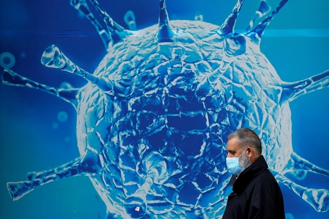
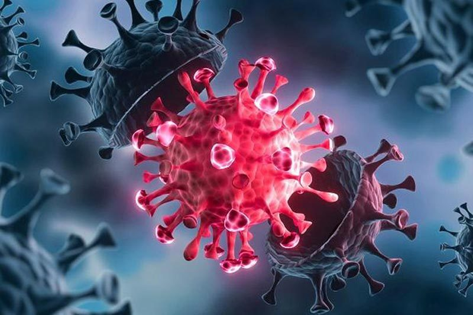

TỔNG QUAN
BIẾN THỂ OMICRON LÀ GÌ?
Biến thể Omicron của COVID-19 đã được WHO xác định là một biến thể đáng lo ngại, dựa trên những bằng chứng cho thấy biến thể này có một số đột biến làm thay đổi hành vi của chúng. Hiện chưa có nhiều bằng chứng xác thực về biến thể Omicron, và nhiều nghiên cứu đang được tiến hành nhằm đánh giá khả năng lây nhiễm, mức độ nghiêm trọng và nguy cơ tái nhiễm từ biến thể này.
Biến thể Omicron phát triển như thế nào?
Khi vi rút phát tán rộng rãi và lây nhiễm ở quy mô lớn, khả năng vi rút đó đột biến sẽ gia tăng. Vi rút càng có nhiều cơ hội để lay lan thì càng có nhiều khả năng để biến đối.
Những biến thể mới như Omicron nhắc nhở chúng ta rằng đại dịch COVID-19 vẫn chưa đi đến hồi kết. Do vậy, mọi người cần tiêm phòng ngay khi có vắc xin và tiếp tục theo dõi các khuyến cáo hiện nay về phòng tránh sự lây lan của vi rút, bao gồm giữ khoảng cách, đeo khẩu trang, rửa tay thường xuyên và giữ cho môi trường trong nhà được thông thoáng.
Chúng ta cần đảm bảo người dân ở mọi nơi đều có khả năng tiếp cận vắc xin và các biện pháp y tế cộng đồng. Sự bất bình đẳng trong việc phân phối vắc xin khiến những quốc gia có thu nhập thấp – phần lớn là các quốc gia Châu Phi - phải hứng chịu những hậu quả từ COVID-19. Những quốc gia đã có đủ nguồn cung vắc xin phải khẩn trương chuyển giao vắc xin như đã hứa hẹn.
Biến thể Omicron xuất hiện ở đâu?
Biến thể Omicron đã được phát hiện tại nhiều nơi trên thế giới. Theo báo cáo của WHO, nguy cơ lây lan ra toàn cầu của biến thể này là rất cao.
Biến thể Omicron có nghiêm trọng hơn so với các biến thể COVID-19 khác không?
Hiện chưa thể so sánh mức độ nghiêm trọng của biến thể Omicron so với các biến chủng khác của COVID-19, bao gồm biến chủng Delta. Các nghiên cứu đang được tiến hành và chúng tôi sẽ tiếp tục cập nhật khi có thêm thông tin.
Một điều quan trọng cần lưu ý là mọi biến thể COVID-19 đều có thể dẫn đến các bệnh lý nghiêm trọng hoặc tử vong, bao gồm cả biến thể phổ biến nhất trên thế giới – biến thể Delta. Vì vậy, hạn chế sự lây lan của vi rút và giảm thiểu nguy cơ phơi nhiễm của bạn với vi rút là điều rất quan trọng.
Biến thể Omicron có lây lan nhanh hơn không?
Hiện chưa rõ liệu biến thể Omicron có lây lan từ người này sang người khác nhanh hơn so với các biến thể khác, chẳng hạn như biến thể Delta, hay không.
Tuy nhiên, việc tiêm phòng và thực hiện các biện pháp phòng ngừa như tránh tập trung đông người, giữ khoảng cách với người khác và đeo khẩu trang vẫn đóng vai trò quan trọng để giảm thiểu sự lây lan của COVID-19. Chúng ta biết rằng những hành động này đã có hiệu quả trong việc phòng ngừa các biến thể khác.
Vắc xin COVID-19 có hiệu quả đối với biến thể Omicron hay không?
Các nhà nghiên cứu đang tìm hiểu xem liệu biến thể Omicron có thể gây ra ảnh hướng nào đối với hiệu quả vắc xin COVID-19 hay không. Mặc dù nguồn thông tin còn hạn chế, WHO tin rằng chúng ta có thể nhận định các loại vắc xin COVID-19 hiện nay có khả năng bảo vệ người dân trước các bệnh lý nghiêm trọng và tử vong.
Người dân cũng cần tiêm phòng để bảo vệ bản thân trước các biến thể đang lây lan rộng rãi khác, ví dụ như biến thể Delta. Hãy tiêm phòng đầy đủ ngay khi có thể. Nếu vắc xin bạn sử dụng cần tiêm hai mũi, bạn cần tiêm đủ cả hai mũi để được bảo vệ tối đa.

